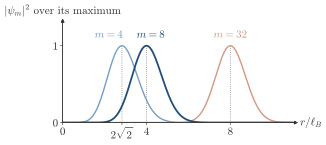
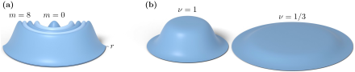
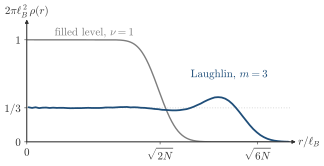

Page 9 of 13 of this session
4.13 The symmetric gauge and the lowest-Landau-level wavefunctions
What do the states of the lowest Landau level look like in real space, and what is the many-body state where all of them are filled? We will now see that in the symmetric gauge each of these states is a holomorphic function of \(z=x+iy\) times a Gaussian, and that the orbital \(z^m\) sits on a ring of radius \(\sqrt{2m}\,\ell_B\). The filled level is then one Slater determinant with a flat density.
\[H = \hbar\omega_c\left(a^\dagger a + \frac{1}{2}\right), \tag{4.8}\]
This is the Hamiltonian of an electron in a uniform field, written in Section 4.12 with the ladder operators \(a=\ell_B(\pi_x+i\pi_y)/\sqrt2\hbar\) and \(a^\dagger\). Here \(\boldsymbol\pi=\mathbf p-e\mathbf A\) is the kinetic momentum, \(\omega_c\) the cyclotron frequency and \(\ell_B\) the magnetic length. The states of the lowest Landau level are the states with \(a\psi=0\), and they have the energy \(\hbar\omega_c/2\).
To go from single-particle Landau levels to a real many-body quantum Hall wavefunction, we change to the symmetric gauge, \(\mathbf{A}=\tfrac{B}{2}(-y,x,0)\), and to the complex coordinate \(z=x+iy\). We write \(\partial_z = \tfrac12(\partial_x-i\partial_y)\) and \(\partial_{\bar z} = \tfrac12(\partial_x+i\partial_y)\), and then the ladder operator of Section 4.12 in this gauge is proportional to \(\partial_{\bar z} + z/4\ell_B^2\). The condition for the lowest Landau level (LLL), \(a\psi=0\), is therefore a first-order differential equation, and its solutions are the following.
In the symmetric gauge the states of the lowest Landau level are the solutions of
\[\left(\partial_{\bar z} + \frac{z}{4\ell_B^2}\right)\psi(z,\bar z) = 0 \quad\Longrightarrow\quad \psi(z,\bar z) = f(z)\, e^{-|z|^2/4\ell_B^2}, \tag{4.9}\]
with \(f(z)\) any holomorphic function. Each state is a function of \(z=x+iy\) and not of \(\bar z\), times one common Gaussian, for the charge \(+e\) of these pages in the field \(B\hat z\).
The steps From the ladder operator in the symmetric gauge to (4.9)
We take the charge \(+e\) of these pages in the field \(B\hat z\), so \(\boldsymbol\pi=\mathbf p-e\mathbf A\) with \(\mathbf p=-i\hbar\nabla\). In the symmetric gauge the two components are
\[\pi_x=-i\hbar\,\partial_x+\frac{eB}{2}\,y,\qquad \pi_y=-i\hbar\,\partial_y-\frac{eB}{2}\,x .\]
We combine them as in the operator \(a\) of (4.8). With \(\partial_x+i\partial_y=2\partial_{\bar z}\) and \(y-ix=-iz\) we get
\[\pi_x+i\pi_y=-2i\hbar\,\partial_{\bar z}-\frac{ieB}{2}\,z=-2i\hbar\left(\partial_{\bar z}+\frac{z}{4\ell_B^2}\right),\]
since \(\ell_B^2=\hbar/eB\), which is \(\hbar/B\) in the units \(e=1\) of these pages. So \(a=-i\sqrt2\,\ell_B\,(\partial_{\bar z}+z/4\ell_B^2)\), and \(a\psi=0\) is the equation of (4.9).
The simplest solution is the Gaussian alone. We write it as \(e^{-z\bar z/4\ell_B^2}\), and its derivative is
\[\partial_{\bar z}\,e^{-z\bar z/4\ell_B^2}=-\frac{z}{4\ell_B^2}\,e^{-z\bar z/4\ell_B^2},\]
which cancels the second term. For any other solution we write \(\psi=f\,e^{-|z|^2/4\ell_B^2}\), and the same cancellation gives
\[\left(\partial_{\bar z}+\frac{z}{4\ell_B^2}\right)\psi=\big(\partial_{\bar z}f\big)\,e^{-|z|^2/4\ell_B^2}.\]
This vanishes when \(\partial_{\bar z}f=0\), meaning that \(f\) depends on \(z\) and not on \(\bar z\), which is (4.9). The functions \(z\), \(z^3\) and \(e^{z}\) are of this kind, while \(\bar z\) and \(|z|^2=z\bar z\) are not.
Here \(f(z)\) is an arbitrary holomorphic function, meaning any function built only from powers of \(z\) and never from \(\bar z\). This is the precise form of the statement “any power \(z^m\) times a Gaussian is a zeroth-Landau-level wavefunction”. Holomorphicity is not an extra assumption, since it follows directly when we solve the LLL condition in the symmetric gauge. The single-particle LLL orbitals are then
\[\psi_m(z) = z^m\, e^{-|z|^2/4\ell_B^2}, \qquad m=0,1,2,\dots, \tag{4.10}\]
and each of them has an angular momentum \(m\), which is the eigenvalue of \(L_z\) in this gauge. All of them have the same Gaussian envelope, but the polynomial prefactor \(z^m\) moves the probability density of the orbital further from the origin when \(m\) grows. The reason is that \(|\psi_m|^2\) has its maximum where \(\tfrac{d}{d|z|}\big(|z|^{2m}e^{-|z|^2/2\ell_B^2}\big)=0\), which is at the radius \(r_m = \sqrt{2m}\,\ell_B\).
An orbital of the lowest Landau level is \(\psi_m=z^me^{-|z|^2/4\ell_B^2}\), with \(z=x+iy\). What is the radius of the maximum of \(|\psi_m|^2\) for \(m=8\), in units of \(\ell_B\)?
Show the answers
- A. ✗ False
This is false. A ring of radius \(2\sqrt2\,\ell_B\) encloses \(r^2/(2\ell_B^2)=4\) flux quanta, while the state \(m=8\) has the angular momentum of \(8\).
- B. ✓ True
This is true. The maximum is at \(r_m=\sqrt{2m}\,\ell_B\), which is \(\sqrt{16}\,\ell_B=4\,\ell_B\) for \(m=8\). The ring encloses \(m\) flux quanta.

The density \(|\psi_m|^2\) for \(m=4\), \(8\) and \(32\), each divided by its maximum. The radius \(2\sqrt{2}\,\ell_B\) of the first option belongs to \(m=4\), and \(8\,\ell_B\) of the third option belongs to \(m=32\). - C. ✗ False
This is false. A ring of radius \(8\ell_B\) encloses \(r^2/(2\ell_B^2)=32\) flux quanta, which would be the state \(m=32\) and not \(m=8\).
A state of the lowest Landau level solves
\[\left(\partial_{\bar z}+\frac{z}{4\ell_B^2}\right)\psi=0, \qquad z=x+iy.\]
This holds for the charge \(+e\) of this page in the field \(B\hat z\). Which function is such a state?
Show the answers
- A. ✗ False
This is false. The operator gives \(2\bar z\,e^{-|z|^2/4\ell_B^2}\), which is not zero. This state has the energy \(\tfrac52\hbar\omega_c\), so it is in the Landau level \(n=2\).
- B. ✓ True
This is true. It is the holomorphic function \(f(z)=z^2\) times the Gaussian, so the operator gives zero. Its energy is \(\hbar\omega_c/2\) and its angular momentum is \(L_z=2\hbar\).
- C. ✗ False
This is false. We write \(|z|^2=z\bar z\), and the operator gives \(z\,e^{-|z|^2/4\ell_B^2}\), which is not zero. The factor \(\bar z\) takes the state out of the lowest Landau level.
4.14 The many-body wavefunction of the filled lowest Landau level
Now we look for the many-body ground state of \(N\) electrons in which every LLL orbital is occupied. Two conditions fix this state completely. It must be built only from LLL orbitals (4.10), and it must be antisymmetric under the exchange of any two electrons, as fermion statistics requires. Both conditions are satisfied by the following state.
The state of \(N\) electrons that fill the orbitals \(z^0\) to \(z^{N-1}\) of the lowest Landau level is
\[\Psi_1(z_1,\dots,z_N) = \prod_{i<j}(z_i-z_j)\; \exp\!\left(-\sum_i \frac{|z_i|^2}{4\ell_B^2}\right). \tag{4.11}\]
It is one Slater determinant, and its density is flat, \(1/2\pi\ell_B^2\), which is one electron per flux quantum, up to the edge of the droplet.
The Vandermonde product \(\prod_{i<j}(z_i-z_j)\) does two things at the same time. First, it is antisymmetric by construction, since the exchange of two coordinates \(z_i\leftrightarrow z_j\) changes the sign of exactly one factor \((z_i-z_j)\), and this gives the overall minus sign that the Pauli principle requires.
Second, it is exactly the Slater determinant of the single-particle orbitals \(1,z,z^2,\dots,z^{N-1}\), because of the standard identity for the Vandermonde determinant, \(\det\!\big(z_i^{\,j-1}\big) = \prod_{i<j}(z_j-z_i)\). So (4.11) is the Slater determinant of the \(N\) lowest LLL orbitals, times their common Gaussian envelope, where the Gaussians of the single electrons combine into the collective exponential shown above. This is the exact many-body ground state of \(N\) electrons that fill the lowest Landau level completely, which is the integer quantum Hall state at filling \(\nu=1\). The filling factor \(\nu\) is the number of electrons per flux quantum, and with \(N\) filled Landau levels it equals the magnitude of the total Chern number, \(|C_\text{tot}|=N\) of (4.2), so that \(|\sigma_{xy}|=\nu\,e^2/h\). At the fractional filling \(\nu=1/m\) of the Laughlin state of Section 4.16 the plateau is still \(|\sigma_{xy}|=\nu\,e^2/h\), but there \(\nu\) is no longer a Chern number of filled bands.
4.15 Angular momentum, enclosed flux, and the uniform electron gas
In Section 4.13 we saw that a larger angular momentum \(m\) moves the maximum of an orbital further from the origin, to the radius \(r_m=\sqrt{2m}\,\ell_B\). In other words, this orbital encloses a larger area, and so a larger magnetic flux. We will use this link between angular momentum and enclosed flux in Section 4.17 to find how much charge a quasiparticle has.
For now, the important consequence is about (4.11) itself. When we sum over the full Slater determinant, we find a density profile that is essentially uniform, or flat, up to a radius set by the highest occupied angular momentum \(m=N-1\). Beyond this radius it drops sharply to zero. In other words, the filled lowest Landau level is a uniform two-dimensional electron gas without any structure, and this is the property that we will now ask also from a Landau level with fractional filling. Figure 4.5 shows both parts of this statement, with the single orbitals as nested rings of growing radius, and the flat droplet that they give when we add them.


The orbital \(z^me^{-|z|^2/4\ell_B^2}\) sits on a ring of radius \(r_m=\sqrt{2m}\,\ell_B\). The filled lowest Landau level of \(N\) electrons uses the orbitals \(m=0\) to \(N-1\). How does the radius of this disc change if we double \(N\)?
Show the answers
- A. ✗ False
This is false. The radius is \(\sqrt{2(N-1)}\,\ell_B\). It is \(7.1\,\ell_B\) for \(N=26\) and \(10.1\,\ell_B\) for \(N=52\), a factor \(1.4\) and not \(2\). A factor \(2\) needs four times as many electrons.
- B. ✓ True
This is true. The radius is \(r=\sqrt{2(N-1)}\,\ell_B\), so for large \(N\) it grows as \(\sqrt{N}\). For \(N=100\) and \(N=200\) we get \(14.1\,\ell_B\) and \(19.9\,\ell_B\).
- C. ✗ False
This is false. A uniform density means that each electron takes the same area, so more electrons need more area. For \(N=100\) the radius is \(14.1\,\ell_B\) and for \(N=200\) it is \(19.9\,\ell_B\).
The normalized orbitals of the lowest Landau level are
\[\psi_m(z)=\frac{z^m\,e^{-|z|^2/4\ell_B^2}}{\sqrt{2\pi\,2^m\,m!}\;\ell_B^{m+1}}, \qquad m=0,1,2,\dots\]
Show that this is the right normalization. Then sum the densities \(|\psi_m|^2\) of all the orbitals, and show that the filled level has the density \(1/2\pi\ell_B^2\) at every point, which is one electron per flux quantum.
Solution
In polar coordinates \(|z|=r\), and the substitution \(u=r^2/2\ell_B^2\) gives \(r\,dr=\ell_B^2\,du\) and \(r^{2m}=(2\ell_B^2u)^m\). The norm of \(z^me^{-|z|^2/4\ell_B^2}\) is then
\[\int |z|^{2m}e^{-|z|^2/2\ell_B^2}\,d^2z = 2\pi\int_0^\infty r^{2m+1}e^{-r^2/2\ell_B^2}\,dr = 2\pi\,\ell_B^2\,(2\ell_B^2)^m\int_0^\infty u^m e^{-u}\,du = 2\pi\,2^m\,m!\,\ell_B^{2m+2},\]
which is the square of the denominator. So each density is
\[|\psi_m|^2=\frac{1}{2\pi\ell_B^2}\,\frac{u^m}{m!}\,e^{-u}, \qquad u=\frac{r^2}{2\ell_B^2}.\]
The sum over all \(m\) is \(e^{-u}\sum_m u^m/m! = e^{-u}e^{u}=1\), so the density is \(1/2\pi\ell_B^2\) at every \(r\). The area \(2\pi\ell_B^2\) holds the flux \(2\pi\ell_B^2B=h/e\), which is one flux quantum, so the filled level has one electron per flux quantum. Note that \(u\) is the number of flux quanta inside the radius \(r\), and the orbital \(m\) has its largest weight at \(u=m\), which is the ring of radius \(\sqrt{2m}\,\ell_B\).
With \(N\) electrons the sum stops at \(m=N-1\). The density then drops through one half at \(u\approx N\), the radius \(\sqrt{2N}\,\ell_B\), and it is flat only up to about \(2\,\ell_B\) inside this radius. For \(20\) electrons the density times \(2\pi\ell_B^2\) is \(1\) within \(0.002\) up to \(4.3\,\ell_B\), and \(1/2\) at \(6.27\,\ell_B\), as the grey curve of Schematic 4.10 shows. With \(e\) written again the density is \(eB/h\), which is \(241.8\) electrons per square micrometre at \(1\) T, and a sample at this density and field has the filling \(\nu=1\).
- In Section 4.16 the Vandermonde factor of (4.11) is raised to an odd power, which gives the Laughlin state.
- In Section 4.17 the link between angular momentum and enclosed flux gives the charge of a quasihole.
- In Section 5.2 the measured ratio \(e^2/h\) of the filled level is compared with the flux quantum \(h/2e\) of a superconductor.